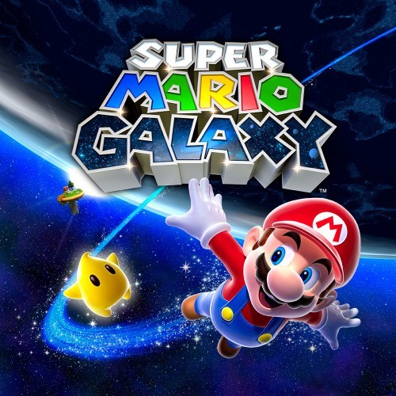

Satoru Iwata read a book and then pitched what at the time was the third best selling home console ever
Click here to see what fans and critics consider the best Wii games
With each console release since the SNES in 1990, Nintendo had experienced declining sales. The trend became particularly concerning when the GameCube, Nintendo's first ever disc-based console, failed to challenge Sony's PlayStation 2 for market dominance.
The most popular Wii games
| TITLE | YEAR | PUBLISHER |
| The Legend of Zelda: Twilight Princess | 2006 | Nintendo |
| Resident Evil 4 | 2007 | Capcom |
| New Super Mario Bros. Wii | 2010 | Nintendo |
| Super Mario Galaxy | 2006 | Nintendo |